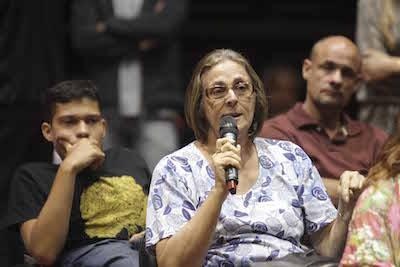

O IMERSÃO é um projeto da Prefeitura do Rio que convida um grupo de cidadãos e cidadãs a conhecer o funcionamento e os processos decisórios da gestão municipal sob uma nova perspectiva: a de dentro.
A Prefeitura abre suas portas e os participantes passam 3 dias tendo conversas com técnicos e gestores municipais e conferindo instalações, projetos e obras municipais que lhes permitam entender as metodologias e os processos relativos à cidade, tanto na teoria, quanto na prática.
Cada módulo aborda quatro temas centrais da gestão municipal: Planejamento & Gestão Municipal, que é fixo a todos os módulos; e outros 3 temas selecionados a partir dos interesses indicados no momento de inscrição.


Rua São Clemente 360, Rio de Janeiro - RJ
+55 (21) 2976-9708